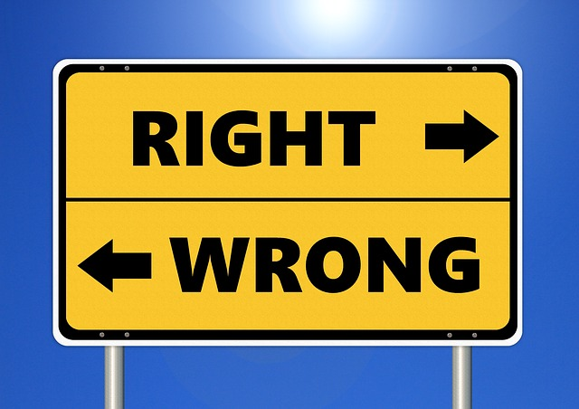

Unit 2 Foundational Moral Concepts

Photo Credit: Pixabay
Overview
Welcome to Unit 2. You’ve probably noticed that every discipline or field of study including medicine, history, plumbing, auto mechanics, and philosophy has its own terminology or jargon, words that people within these fields of study use with each other. These terms convey important ideas and have been learned by the practitioners of the discipline along the way. To outsiders, they don’t mean much. To practitioners, they are the ideas of the trade and without a clear grasp of them, they simply could not do their jobs. Ethics, also, has its own key terms and, in this unit, we will turn our attention to some of the most important ones. The terms we will examine convey important ethical concepts, the ones we need to understand in order to carry out proper ethical inquiry. Once we have a clear working knowledge of them, we will be able to reflect on where we stand on the issues they raise. The positions we take on these concepts will have a great bearing on how we think about all ethical questions and dilemmas we face.
For example, have you ever wondered why there seem to be different moral views and traditions in different places, cultures, societies, and even in different times? Has it ever led you to wonder if there really is moral truth in any objective sense? Or do moral teachings really come down to moral traditions, or even personal opinions, which could have been different? In other words, is moral nihilism true? How about cultural relativism, or moral subjectivism?
Or could there be some moral principles and rules which are objectively true? And what would it mean to say a moral claim is objectively true?
We can take this one step further because behind all of these questions there seems to be a deeper assumption at work, namely, that human beings have free will. After all, if we don’t, then what is the point of prescribing moral directions about how we should or should not act? But are we as free as most of us feel?
There are a number of views on this foundational question and in our readings we will come across such terms as Libertarianism, determinism, and compatibilism. Each of these views provides a different perspective on the question of free will and moral responsibility.
That is where we’re heading in this unit. As we’ve noted above, understanding these terms will allow us to reflect on them to see where we stand on the issues they raise. Once that process is under way, we’ll be ready to think clearly about the specific moral questions we will encounter in this course and in life. It will be a rewarding and useful journey.
Topics
This unit is divided into 3 topics:
- Moral Nihilism
- Moral Objectivism vs. Subjectivism
- Free Will and Moral Responsibility
Learning Outcomes
When you have completed this unit, you should be able to:
- Define key terms, such as Moral Nihilism, Moral Subjectivism, Moral Objectivism, Free Will, Determinism, and Compatibilism.
- Examine a case and suggest solutions, applying key concepts in moral discussions.
Activity Checklist
Here is a checklist of learning activities you will benefit from in completing this unit. You may find it useful for planning your work.
Read, View and Reflect
- Read the first part of Chapter 3 (pages 4044) of your Introduction textbook. Watch the videos related to the topic.
- Read the rest of Chapter 3 (pages 4457) of your Introduction textbook. Watch the videos related to the topic.
- Read chapter 4 of your Introduction textbook. Watch the videos related to the topic.
Resources
Here are the resources you will need to complete this unit.
- Wolff, Jonathan. An Introduction to Moral Philosophy. New York: W. W.
- Norton & Company, 2018, (P. 4069).
- Other online resources will be provided in the unit.
Moral Nihilism
In this topic we’re turning to a viewpoint which you may find surprising, namely, moral nihilism. Most of us have probably used the terms, nihilism or nihilist, before but what does the term, moral nihilism, refer to? If someone calls you a moral nihilist, what are they saying about you and your moral values? Should you be happy or unhappy to be labelled this way?
The word, nihilism, comes from a Latin word meaning “nothing,” and thus moral nihilism is the view that nothing is intrinsically or universally right or wrong. In other words, we may prefer or like certain actions more than others, but nothing that we, or anyone else does, is truly morally good or bad. Even an act like rape or murder is not wrong, in itself, but neither is it right since nothing is intrinsically right or wrong.
How, then, does a moral nihilist view the moral rules or traditions of any given society? According to this view, people may find it useful to create, follow, and teach rules and traditions in their societies. After all, what society could get along without them? But they are nothing more than traditions which could have been different if other ones would have been deemed more useful. In this sense they are arbitrary.
Does anyone really embrace moral nihilism? Why would they? For this topic, read the Wolff Introduction text to gain a fuller understanding of this view. See if you can figure out one or two reasons for holding this view.
Learning Activities
Read, View and Reflect
In the first activity, you are asked to read the first part of Chapter 3 (pages 4044) of your textbook, An Introduction to Moral Philosophy by Jonathan Wolff. As you read be sure to take notes in your Learning Journal, defining key terms and explaining key concepts. Study the chapter review summary, questions and key terms. This will help you as you complete the assessments in this course. Next, watch the following short videos to learn more about the term, moral nihilism.
Moral Objectivism vs. Subjectivism
Do moral values exist independently of what humans think or do we somehow create them? That is the question for this topic and its importance could hardly be overstated since it concerns the very nature of moral values? Are they there to be discovered by us or do we invent them? Furthermore, if we invent them, do we do so individually or in communities working together as groups?
As we’re thinking about this question, let’s also ask what it means to call a moral statement, or any other kind of statement, objectively true? Could something be subjectively true? If so, what is the difference between these two kinds of truth?
Moral objectivism is the view that moral values exist independently of human thinking. We do not create or invent them, rather we recognize and discover them. They are objectively true, meaning their truth does not depend upon our attitude, beliefs or agreement.
Moral subjectivism is the opposite view, namely that moral values are somehow created or invented by humans. According to this view, moral claims are not objectively true but only subjectively true, meaning they are true for the person who utters them, so long as that person really believes them. This means, of course, that two people could utter opposing moral claims and yet both be true in this subjective sense.
The question could be put this way: Does objective moral value exist or is morality a purely subjective entity? This question has great importance for the way we think about the moral claims we all make about such things as rape, murder, theft, helping versus harming others, and telling the truth versus misleading people. If the claim, “theft is immoral” is objectively true, it means it is true whether or not we recognize or agree with it. It just is. On the other hand, if it is only subjectively true, it means it is only true in the sense that someone, or some community, believes it to be true. It is then true for that person or community. If a different person or community declared the opposite moral claim, then that claim would be equally true for them. In other words, if moral claims are only subjectively true, then opposing moral claims could both be true just as opposing claims made by two people about their personal tastes in food or fashion could both be true.
As you read about this topic, see if you can identify the reasons given in support of these two perspectives on the nature of our moral claims as well as some different ways they are both expressed.
Free Will and Moral Responsibility
For this topic, we’ll take our discussion one step further and explore an important assumption which seems to be behind the questions we’ve been asking so far. Until now, we’ve been assuming that human beings have free will. After all, if we do not act freely, how can we sensibly talk about what we should or should not do, which is the purview of ethics? Most of us feel like we have free will but do we?
Libertarians believe so. According to libertarianism, we freely choose most of our actions, meaning we have the power to either do them or not do them. The opposite view is called determinism. It holds that humans do not possess free will, that all of our actions are determined by something, whether it be one’s heredity, the past chain of events or God. This view comes in a variety of forms as we will see in our reading for this unit.
If determinism is true, it would be hard to see how we could properly be held responsible for our actions. After all, on this view we couldn’t have acted differently than we did. But if that’s the case, then it hardly seems appropriate to commend or blame us for anything we do, or to hold us responsible for it. We only did what we were determined to do. But then, what’s the point of having moral instructions prescribing or condemning certain actions since we cannot carry out any different actions than the ones we do?
So then, does one need to be a libertarian to believe in moral responsibility or any meaningful morality? We might think so but a theory called compatibilism holds that there is a way one can both be a determinist and at the same time believe we are morally responsible for our actions. How can one believe both?
Learning Activities
Read, View and Reflect
Read Chapter 4 in the Wolff Introduction text (pages 5869). As you read this chapter, ask yourself if our instinctive belief in free will is a sufficient basis for continuing to believe we really do act freely. Also, reflect on the reasons given for the various kinds of determinism and ask yourself whether it is possible to believe in both determinism and moral responsibility.
Next, watch the following videos to learn more about key terms from this chapter.
Facebook Case Study
Read the following case study and consider what you would do in the situation. What ethical issues arise?
As a manager, you discover that one of your employees is on Facebook during the workday. Whether it is a quick check for messages or spending minutes reading the news feed, this constitutes stealing from the company. What should you do as a manager and why? What perspectives should you consider and why? For example, consider how your response to this situation may vary depending upon whether you think moral value is objectively true or only subjectively true. What are the consequences of the actions you feel you must take?
Note that you may be asked to review this case or similar cases in your class discussion groups. You may want to prepare by relating the case to your readings.Specifically, identify the ethical issues and terms to help explain the case.
Assessment
Assignment: Reflective Journal (20%)
Throughout this course, you will be invited to write about what you are learning in a Reflective Journal. You should consider your journal as a place for you to try out new ideas, to test your assumptions, and possibly share what you are learning with your community. For more on Reflective Journaling, see the following resource
After completing this unit, including the learning activities, you are asked to write 250300 word reflection that compares and contrasts the different perspectives covered in this unit (nihilist, moral subjectivist, moral objectivist, free will advocate, determinist, and compatibilist) and how these perspectives would impact how one might respond to an unethical activity.
Discussion Responses
After you have finished your journal assignment, you will share your responses in class with your peers. You will then be asked to share 12 more ideas in your journal response, highlighting what you learned from the discussion with your peers. As you discuss, be sure to respond substantively.
Substantive responses may include: Providing a new thought, idea, or perspective; Citing an experience or example of what we are learning; Adding a new twist on a perspective; Critically thinking about an idea/concept; Questioning or challenging a principle/perspective; Asking a question or making a comment that shows you are interested in what another person says or encourages another person to elaborate on something they have already said; Sharing a resource (a reading, web link, video) not covered in the syllabus that adds new information or perspectives to our learning; Making a comment that underscores the link between two people’s contributions and making this link explicit in your comment. Or making a summary observation that takes into account several people’s contributions and that touches on a recurring theme in the discussion.
What Substantive Participation is NOT: Very basic comments such as “I agree” or “I disagree;” Restating what has been said (unless there is a direct purpose in doing so); Disrespectfully disagreeing; Pat answers that are not thoughtprovoking or do not move the dialogue forward; Below are examples of how to stimulate your own and others’ thinking: What would happen if… Other times it may be helpful to … It is my understanding…what is your experience with this? You might approach this from … Is it possible that … Would you consider … Maybe … Possibly … Sometimes … I’m wondering if… Do you think …
Assignment: Ethics Committee Response (ungraded practice)
After completing this unit, including the learning activities, you are asked to analyze a case from the perspectives of a nihilist, moral subjectivist, moral objectivist, free will advocate, determinist, and compatibilist.
For this practice Ethics Committee meeting, you will discuss the following case:
You discover your supervisor has been involved in an unethical activity, as she has been padding her expense account with substantial amounts. Your supervisor knows you know what she has done. Are you complicit? What do you do? Should you report this unethical activity? What would be the consequences for you and for your superior? From the perspective of a nihilist, moral subjectivist, moral objectivist, free will advocate, determinist, and compatibilist, what might you do?
As you meet with your Ethics Committee this week, discuss the case above and take notes as a group. In your response, work with key terms and concepts from your readings. (eg. If I was a ….I would say…about this case.)
Instructions for Assignment Submission
Assignments should be submitted on Moodle by the end of the week.
Go to the Assessments tab and select Unit 2 Reflective Journal to submit your assignment.
Grading Criteria:
Be sure to include your initial journal response, as well as ideas from your class discussion. Here are the grading criteria that will be used to mark your journal and discussions:
|||| | Comprehensiveness| Evidence of having reviewed all readings and comprehensiveness of responses to questions| /5| | Critical Thinking and SelfReflection | Demonstration of your ability to use critical thinking and selfreflection in discussing thoughts and feelings about the course material and the course in general. | /5| | Personal Application | Integration of your views of the readings with your own experiences, biases, and knowledge of ethics.| /5| | Communication Skills | Demonstration of your ability to communicate your ideas in writing and to organize your responses clearly, thoroughly, and concisely. | /5| | Discussion Participation | Participation in discussions. Responses are thoughtful and insightful and promote the learning of fellow students. | /5|
Checking your Learning
Before you move on to the next unit, you may want to check to make sure that you are able to:
- Define key terms, such as Moral Nihilism, Moral Subjectivism, Moral Objectivism, Free Will, Determinism, and Compatibilism.
- Examine a case and suggest solutions, applying key concepts in moral discussions.